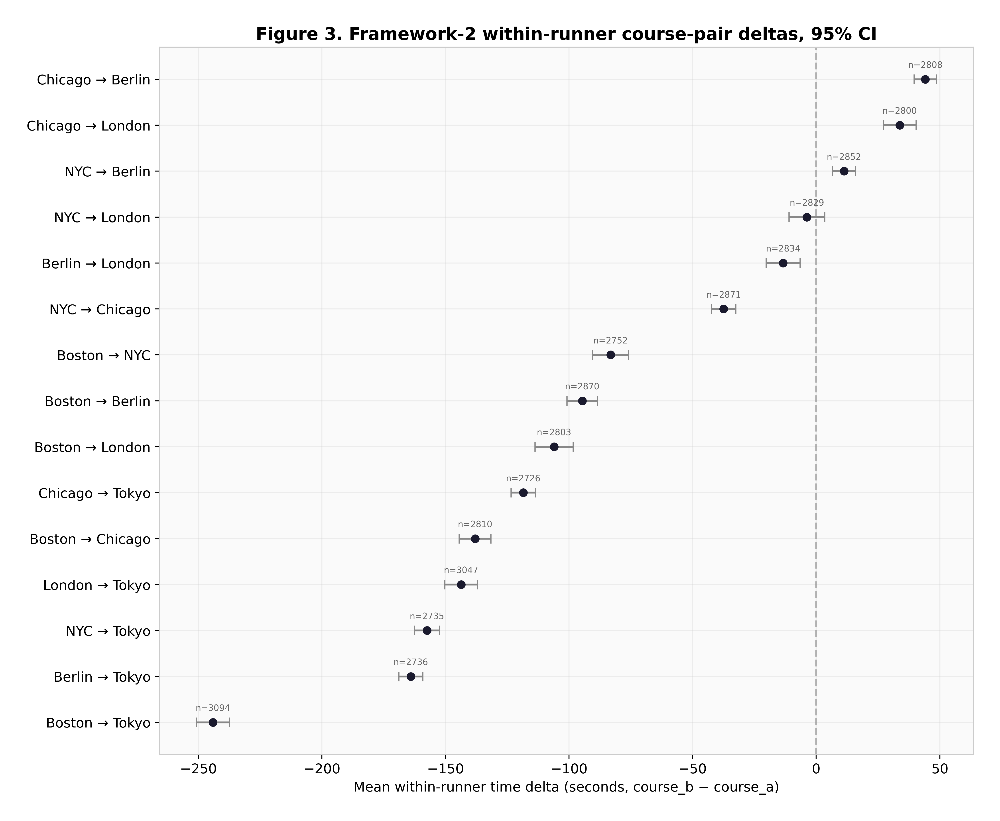
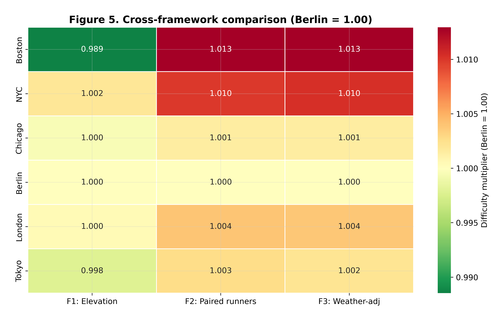
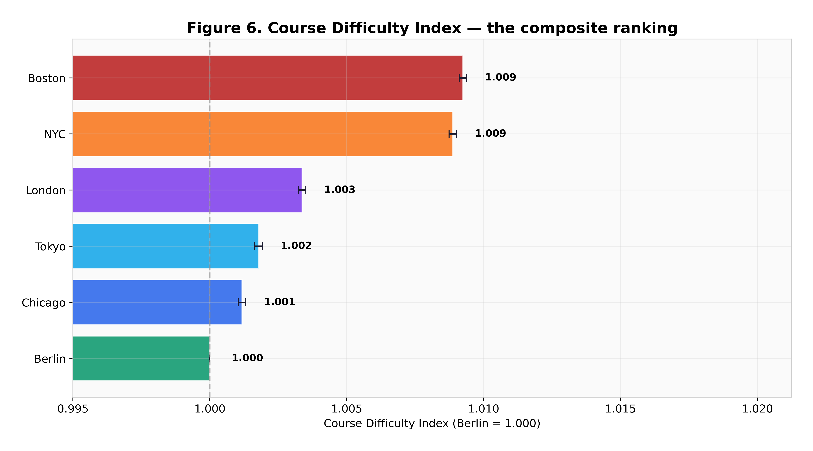
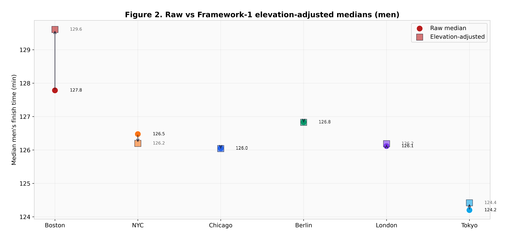
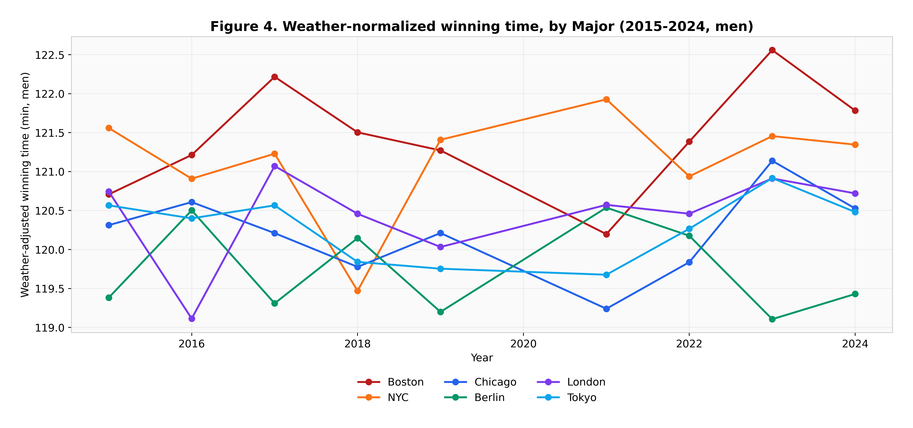
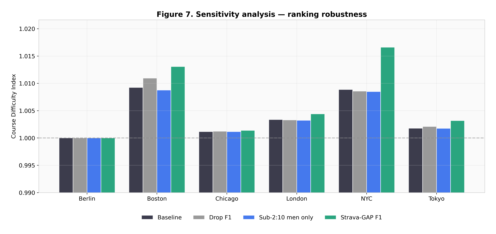
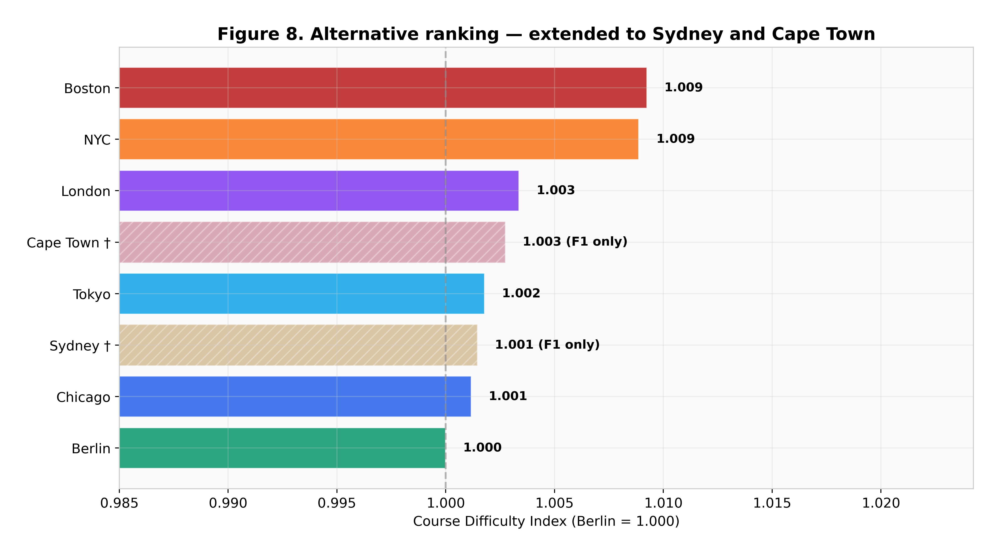
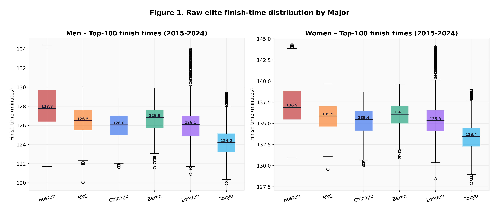

1 · Grade-adjusted prediction
Minetti et al. (2002) energy-cost integration over each course's real gradient profile. Sees terrain, blind to everything else.
2:02 in Berlin against 2:05 in Boston.
The six World Marathon Majors are treated as interchangeable and are obviously not. This measures the difference three separate ways — an energy cost integration over each course's gradient, a within-runner paired comparison of the same athletes across course pairs, and a weather-normalized elite average — then combines them into a single Course Difficulty Index with Berlin set to 1.000. Boston comes out 101 ± 2 seconds slower than Berlin for an equivalent runner.
Boston against Berlin, from the cleanest framework, with a bootstrap confidence interval of ± 2 seconds.
New York, the second hardest. The two hard courses are hard for different reasons.
covers Berlin, Chicago, London and Tokyo. Berlin and Chicago are statistically indistinguishable.
the swing a single hot edition produces. Weather moves a course's year more than the course's own character does.
Start · why one framework is not enough
Compare raw finish times across courses and you are mostly measuring which race attracted the faster field that year. Adjust for elevation only and you miss weather, which turns out to be larger. Compare elite top-tens and you inherit whichever course had the deeper start list.
So the answer here is not one method done carefully, it is three methods with different weaknesses, checked against each other. Where they agree, the finding is probably about the course. Where they disagree, the disagreement is the finding.
Minetti et al. (2002) energy-cost integration over each course's real gradient profile. Sees terrain, blind to everything else.
The same athlete's time on two courses within 18 months, weather-normalized, bootstrapped. The cleanest of the three, because the runner is their own control.
Maughan / El Helou penalty curves applied to elite finish times, so a hot edition is not counted as a hard course.
↓ the cleanest read
The within-runner framework is the one to trust most, because genetics, training and physiology cancel out — it is the same person on both sides of the comparison. It puts Boston 101 seconds and New York 78 seconds behind Berlin for an equivalent runner, both with tight bootstrap intervals.
Boston's difficulty is not the Newton hills alone. The course drops sharply early, which shreds quadriceps before the climbs arrive, and then the hills land between 16 and 21 miles. New York's is the bridges and a course that never lets a rhythm settle.

↓ do the three agree?
All three frameworks put Boston hardest and New York second, and all three cluster the other four. They disagree on how large the gaps are, which is expected given what each can and cannot see. Combined, they produce the Course Difficulty Index.



↓ the finding nobody expects
Year-to-year variation within a single course is dominated by conditions, not by anything about the course. Berlin 2022 at 18°C and London 2018 at 23.5°C each moved that edition's winning time by 60 to 120 seconds — comparable to or larger than the permanent gap between most of these courses.
Which is a warning about the whole enterprise. If you compare two courses using single editions and do not normalize for weather, you will mostly measure the weather. That is precisely the error frameworks 2 and 3 are built to avoid, and it is consistent with the one-minute-per-degree effect measured separately across fourteen Bostons.

↓ robustness
The sensitivity analysis varies the assumptions that could plausibly be wrong — the weather penalty curve, the pairing window, the elite cutoff — and re-runs the index. Boston stays hardest throughout. The four-course middle cluster reshuffles internally, which is the honest reading of a 35-second spread: those four are not really distinguishable.



↓ what this cannot tell you
The within-runner framework is the most trustworthy and also the most data-hungry: it needs athletes who ran two different Majors inside 18 months, which is a much smaller set than the full results. Tight bootstrap intervals describe the precision of that sample, not the size of it.
Course elevation profiles come from official PDFs and canonical Strava routes, which do not always agree to the metre, and the Minetti curve is a laboratory relationship applied to a road race. Both push framework 1 toward being indicative rather than exact — one reason it is not the headline.
The Sydney and Cape Town extension is a bonus scored under framework 1 only, and should be read as much weaker evidence than the six main courses.
Finish · how it was built
python src/build_data.py then python src/analysis.py — deterministic, seed 42, under 90 seconds